Every image in test_set3 with what the two readers said and the evidence
they said it from. This page exists to be disagreed with: the point is to find
where the readers are wrong before anything is built on them. Amber border marks a card
where the skin mask was small enough that the median is thin evidence.
Tone is the median Lab of the face-skin pixels, not
the mean — a face carries shadow, highlight and sometimes makeup, and the median
survives all three. It is reported as ITA, the standard Individual Typology Angle, and as
one of eight ordinary colour words. The word is what reaches the prompt, not the
hex: a diffusion model reads “tan” and does not read
#D2A679. The measured hex is shown only so the mapping can be checked.
149 ms per image.
Framing is pose-landmark presence: is this joint confident and
inside the frame. Shoulder → hip → knee → ankle. That is a much weaker
question than the eight head-detection heuristics V2 burned through — those tried
to locate a boundary; this reads a coordinate the detector already returns. 36 ms
per image.
Where this will be wrong, predictably: strong colour casts move the
median; a face in deep shadow reads darker than the person is; heavy makeup reads as
skin; and where no face is in frame the reader falls back to body skin, which is a
different and usually more exposed surface. Each of those is visible on this page rather
than hidden behind a number.
the eight tone wordswhitecreambeigetanlight brownbrowndark brownblack
p001full_bodyshoulder · hip · knee · ankle
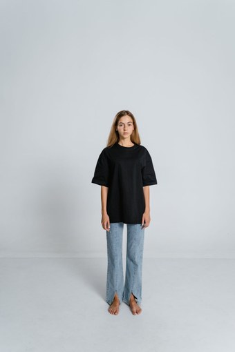
photograph
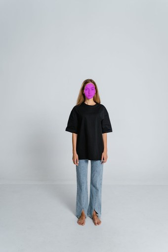
pixels the median came from
tanITA 47°L* 71from facemeasured #D2A38B
p002full_bodyshoulder · hip · knee · ankle
photograph
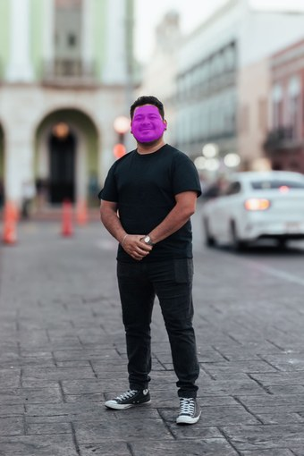
pixels the median came from
brownITA -1°L* 50from facemeasured #946D68
p003full_bodyshoulder · hip · knee · ankle
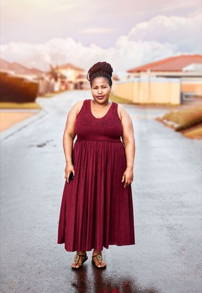
photograph
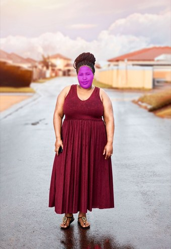
pixels the median came from
tanITA 39°L* 69from facemeasured #D7997F
p004waist_upshoulder · hip
photographpixels the median came from
tanITA 61°L* 68from facemeasured #D39795
p005full_bodyshoulder · hip · knee · ankle
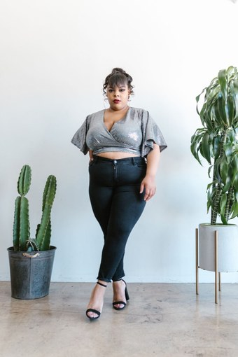
photograph
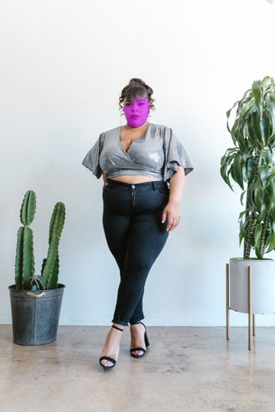
pixels the median came from
tanITA 51°L* 67from facemeasured #C29B8B
p006full_bodyshoulder · hip · knee · ankle
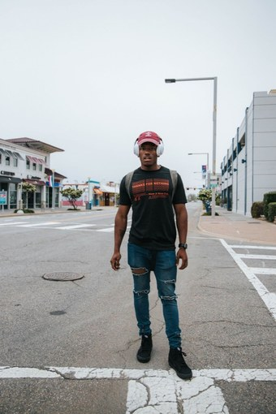
photograph
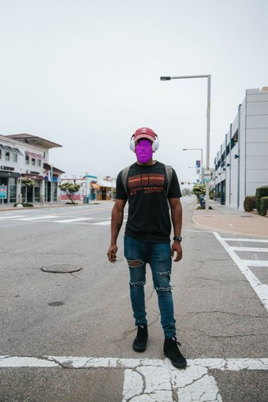
pixels the median came from
blackITA -66°L* 25from facemeasured #52342B
p007waist_upshoulder · hip
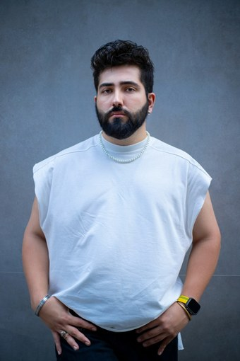
photograph
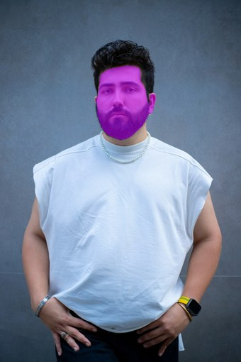
pixels the median came from
brownITA -78°L* 45from facemeasured #796669
p008waist_upshoulder · hip
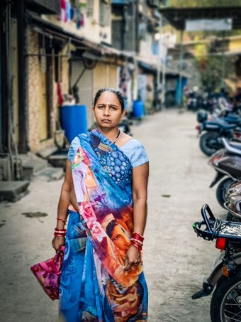
photograph
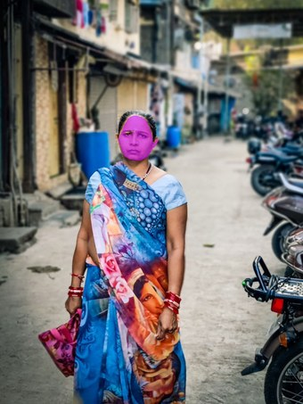
pixels the median came from
tanITA 41°L* 68from facemeasured #CF9B81
p009waist_upshoulder · hip
photographpixels the median came from
light brownITA 9°L* 56from facemeasured #BA7549
p010full_bodyshoulder · hip · knee · ankle
photographpixels the median came from
light brownITA 21°L* 56from facemeasured #A37F6B
p011waist_upshoulder · hip
photographpixels the median came from
light brownITA 17°L* 57from facemeasured #B57A61
p012full_bodyshoulder · hip · knee · ankle
photographpixels the median came from
light brownITA 14°L* 56from facemeasured #AC7C5D
p013waist_upshoulder · hip
photographpixels the median came from
tanITA 37°L* 66from facemeasured #CB937B
p014waist_upshoulder · hip
photographpixels the median came from
brownITA -26°L* 40from facemeasured #7F543D
p015waist_upshoulder · hip
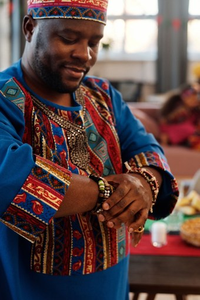
photograph
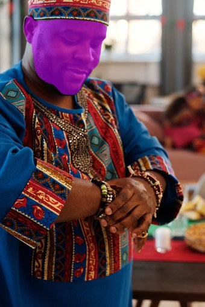
pixels the median came from
blackITA -76°L* 22from facemeasured #482F2B
p016full_bodyshoulder · hip · knee · ankle
photographpixels the median came from
beigeITA 62°L* 76from bodymeasured #D9B6A3
p017knee_upshoulder · hip · knee
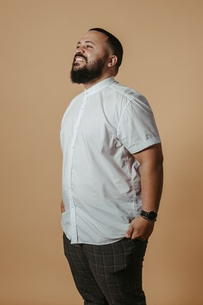
photograph
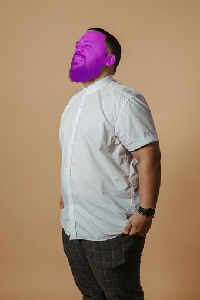
pixels the median came from
brownITA -36°L* 39from facemeasured #745644
p018waist_upshoulder · hip
photographpixels the median came from
blackITA -74°L* 22from facemeasured #3C3228
p019waist_upshoulder · hip
photograph
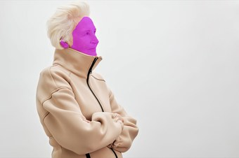
pixels the median came from
tanITA 42°L* 69from facemeasured #D49C83
p020unknownno joints
photographpixels the median came from
dark brownITA -46°L* 28from facemeasured #683120
p021full_bodyshoulder · hip · knee · ankle
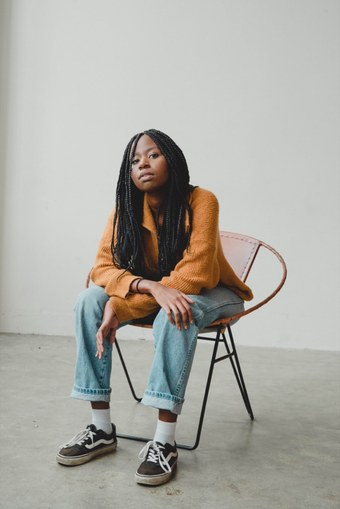
photograph
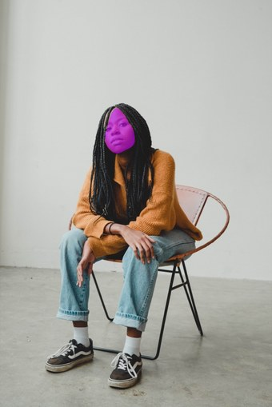
pixels the median came from
brownITA -4°L* 49from facemeasured #926C5C
p022full_bodyshoulder · hip · knee · ankle
photographpixels the median came from
light brownITA 34°L* 54from facemeasured #9A7A78
p023knee_upshoulder · hip · knee
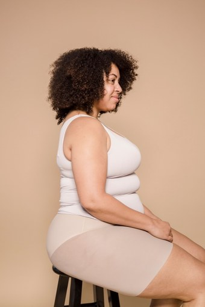
photograph
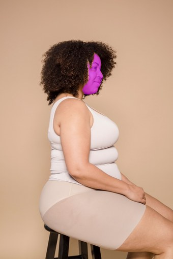
pixels the median came from
tanITA 36°L* 67from facemeasured #D1947A
p024full_bodyshoulder · hip · knee · ankle
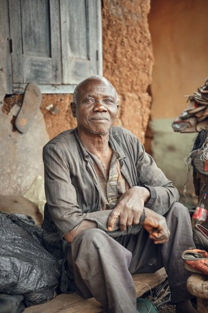
photograph
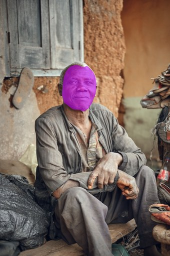
pixels the median came from
brownITA -1°L* 50from facemeasured #8B7162
p025full_bodyshoulder · hip · knee · ankle
photograph
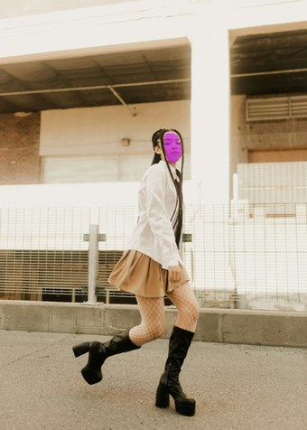
pixels the median came from
tanITA 36°L* 68from facemeasured #C59D7A
p026full_bodyshoulder · hip · knee · ankle
photograph
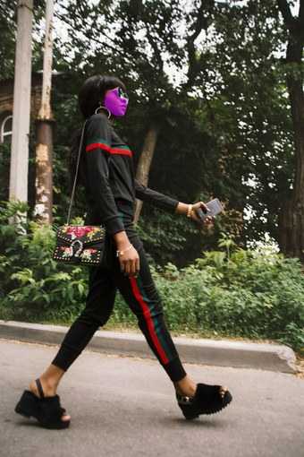
pixels the median came from
dark brownITA -40°L* 32from facemeasured #69442C
p027knee_upshoulder · hip · knee
photograph
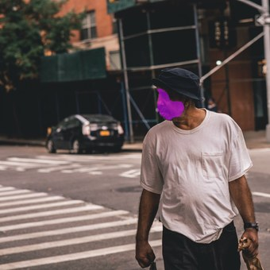
pixels the median came from
blackITA -65°L* 24from facemeasured #4E3227
p028waist_upshoulder · hip
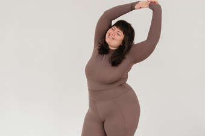
photograph
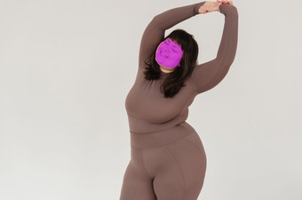
pixels the median came from
tanITA 42°L* 67from facemeasured #D19582
p029chest_upshoulder
photographpixels the median came from
dark brownITA -53°L* 31from facemeasured #684035
p030chest_upshoulder
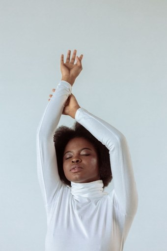
photograph
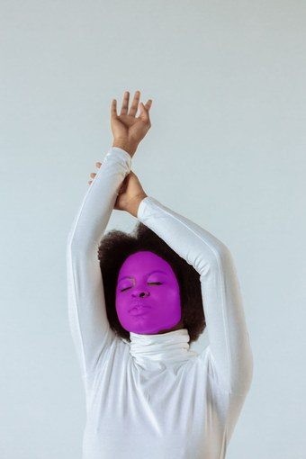
pixels the median came from
dark brownITA -45°L* 36from facemeasured #744B3F
dualuse_emma_watson_black_blazer_armscrossedwaist_upshoulder · hip
photographpixels the median came from
tanITA 53°L* 68from facemeasured #BA9F8D
dualuse_gal_gadot_blue_dress_redcarpetfull_bodyshoulder · hip · knee · ankle
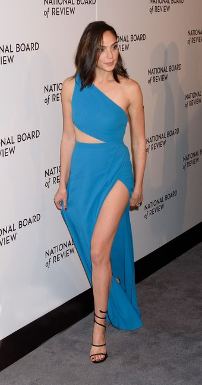
photograph
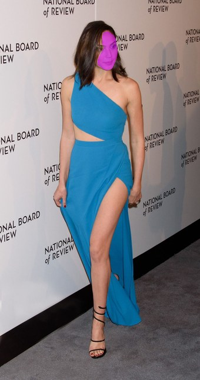
pixels the median came from
tanITA 38°L* 66from facemeasured #CF937D
dualuse_hugh_jackman_grey_suit_outdoorfull_bodyshoulder · hip · knee · ankle
photographpixels the median came from
light brownITA 6°L* 51from facemeasured #A46C64
dualuse_man_black_suit_studio_noncelebfull_bodyshoulder · hip · knee · ankle
photographpixels the median came from
tanITA 61°L* 71from facemeasured #CEA69A
dualuse_queen_latifah_gown_stagewaist_upshoulder · hip
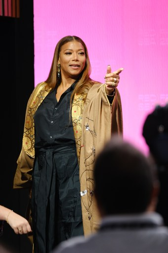
photograph
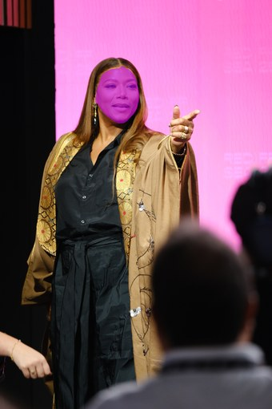
pixels the median came from
light brownITA 17°L* 60from facemeasured #BC8358
dualuse_scarlett_johansson_black_dress_backview_nightfull_bodyshoulder · hip · knee · ankle
photograph
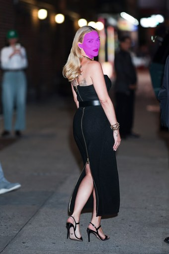
pixels the median came from
beigeITA 77°L* 76from facemeasured #DBB3B2
dualuse_woman_top_denim_skirt_noncelebfull_bodyshoulder · hip · knee · ankle
photographpixels the median came from
dark brownITA -75°L* 35from facemeasured #644E4D
dualuse_zendaya_white_blazer_skirtfull_bodyshoulder · hip · knee · ankle
photographpixels the median came from
light brownITA 12°L* 56from facemeasured #B77753
dualuse_lp_beige_long_coat_menswearfull_bodyshoulder · hip · knee · ankle
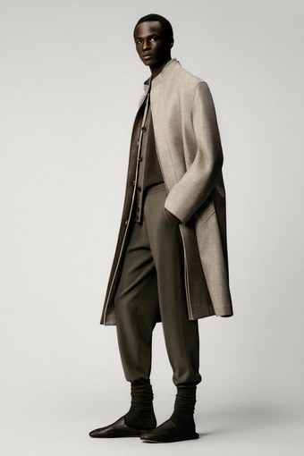
photograph
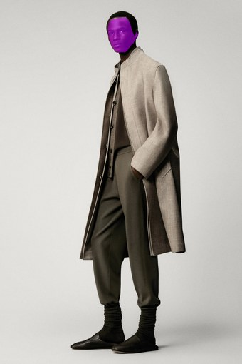
pixels the median came from
blackITA -76°L* 14from facemeasured #2F2117
dualuse_lp_floral_kimono_setfull_bodyshoulder · hip · knee · ankle
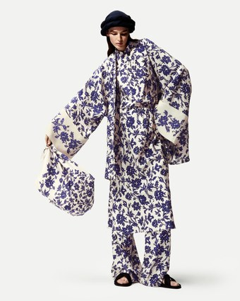
photograph
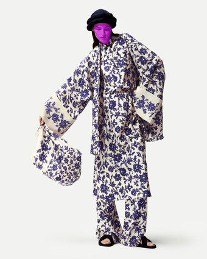
pixels the median came from
dark brownITA -36°L* 37from facemeasured #764D3A
dualuse_lp_navy_quarterzip_knit_LOWRESfull_bodyshoulder · hip · knee · ankle
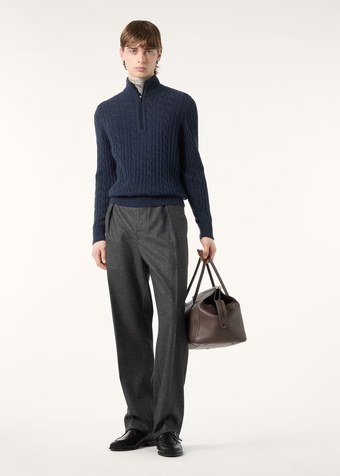
photograph
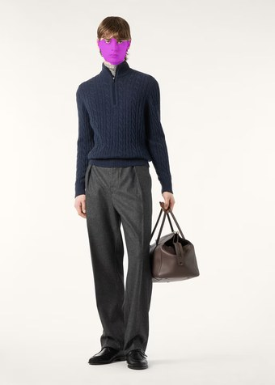
pixels the median came from
tanITA 52°L* 69from facemeasured #C6A18E
dualuse_lp_plaid_overcoat_brown_suitfull_bodyshoulder · hip · knee · ankle
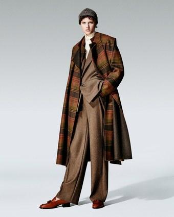
photograph
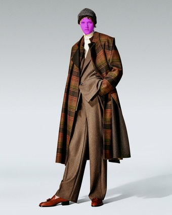
pixels the median came from
beigeITA 60°L* 74from facemeasured #D6AE9D
dualuse_navy_peacoat_onmodelfull_bodyshoulder · hip · knee · ankle